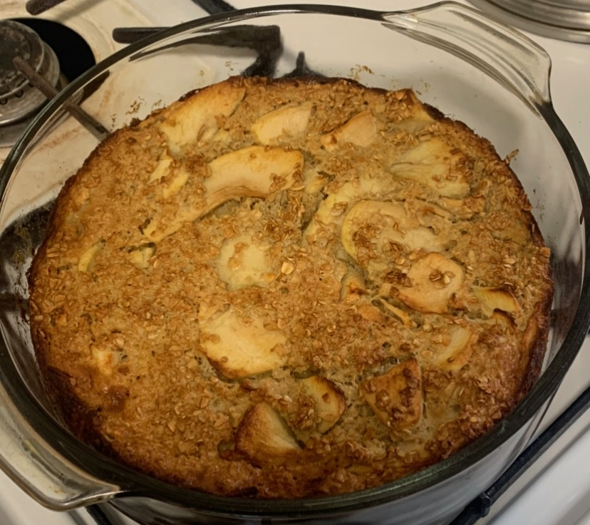

All recipes
Apple Pie

Apple Pie Baked Oatmeal
Thin apple slices baked layered inside oatmeal and egg mixture. Takes around 50 minutes to completely cook using my baking dish. All credit for this goes to Josh Cortis who has a amazing site filled with many different recipes that I have yet to try yet.
Ingredients
- 1.5 Cups Old Fashion Oats
- 1 scoop of Vanilla Protein Powder
- 0.5 baking Powder
- 2 medium sized apples
- 0.13 cups brown sugar
- 0.5 tbsp cinnamon
- 1 tbsp butter
- 1 Egg
- 1 cup of skim milk
- 2.5 tbsp Vanilla Greek Yogurt (optional)
Instructions
For the Apples
- Wash and peel the apples. Cut them in half and remove the cores. Cut them into thin slices
- Heat a large skillet over medium heat. Add 1tbsp of butter and than add the apples
- Sprinkle the cinnamon and brown sugar over the top. Cook until the sugar has reduced and the apples have become soft.
For the Oatmeal Bake
- Preheat your over to 375 degrees F
- In a large bowl,mix together the oats, protein powder and baking powder.
- In a seperate bowl, whisk together the eggs, milk, and 1 tbsp of melted butter. Pur over the top of the apples and oats and mix
- Spray Pan with oild and add the oat mixture and apples
Plating
- This recipe makes 6 servings. Cut the oatmeal into 6 equal pieces. You can use vanilla greek yogurt as a frosting if you wish